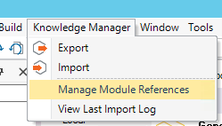
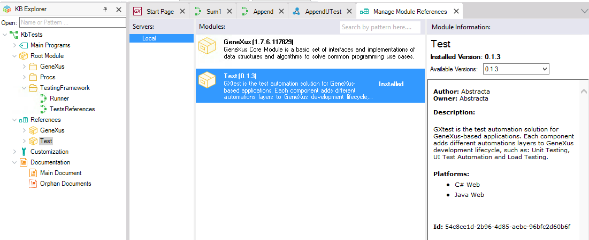

If your GeneXus IDE version has a "Test" menu on the bar, your version should already have installed the Test Module under Knowledge Manager // Manage Module References:  Also, after creating or running unit tests, 2 additional objects will be hosted on your local Knowledge Base:  |